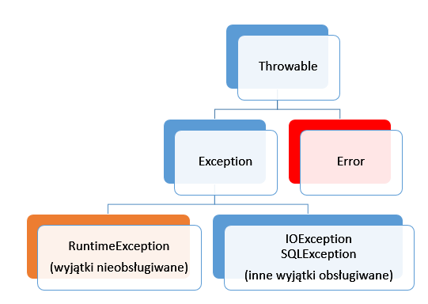
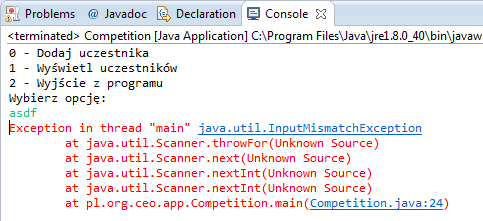
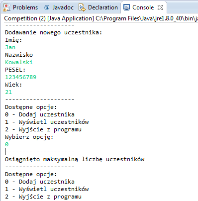

Wyjątki i kolekcje¶
W tej lekcji dowiesz się:
- Czym są wyjątki i jak je obsługiwać
- Czym są kolekcje (listy, zbiory i mapy)
- Co to oznacza, że kolekcje są typem generycznym
- Jakie są typy opakowujące
- Co oznaczają pojęcia autoboxing i unboxing
Wyjątki¶
W każdym programie występują pewne sytuacje nieprzewidziane, które jednak można przewidzieć. Nasza aplikacja powinna być odporna przede wszystkim na błędy, które mogą wyniknąć nie z naszej winy, czyli np. zamknięcie połączenia sieciowego w trakcie komunikacji z innym komputerem podłączonym do sieci, błąd odczytu pliku, albo zwyczajnie wprowadzenie przez użytkownika danych w niepoprawnym formacie (napis zamiast liczby).
We wszystkich takich przypadkach zostają wygenerowane wyjątki, czyli specjalne obiekty, które mówią o tym co poszło nie tak jak powinno. W Javie istnieją dwa sposoby na obsługę wyjątków, które w tym miejscu krótko omówimy.
Hierarchia dziedziczenia klas wyjątków wygląda tak jak na poniższym schemacie.
Nie musisz tego zapamiętywać, ponieważ najważniejszą różnicą pomiędyz poszczególnymi typami wyjątków jest to, czy musimy je obsługiwać, czy też nie. Obsługę wyjątków w niektórych sytuacjach wymusi na Tobie eclipse. W innych sytuacjach warto spojrzeć na sygnatury metod w dokumentacji, ponieważ to w nich znajdziesz informację, czy może ona generować jakiś wyjątek.
Zacznijmy od prostej aplikacji, która posłuży nam do omówienia zagadnień tej lekcji.
Ćwiczenie Przeanalizuj kod poniższego programu, który służy do zbierania danych o uczestnikach konkursu, uruchom go oraz przetestuj dostępne opcje.
plik Person.java
1 2 3 4 5 6 7 8 9 10 11 12 13 14 15 16 17 18 19 20 21 22 23 24 25 26 27 28 29 30 31 32 33 34 35 36 37 | package pl.org.ceo.data;
public class Person {
private String firstName;
private String lastName;
private String pesel;
private int age;
public String getFirstName() {
return firstName;
}
public void setFirstName(String firstName) {
this.firstName = firstName;
}
public String getLastName() {
return lastName;
}
public void setLastName(String lastName) {
this.lastName = lastName;
}
public String getPesel() {
return pesel;
}
public void setPesel(String pesel) {
this.pesel = pesel;
}
public int getAge() {
return age;
}
public void setAge(int age) {
this.age = age;
}
@Override
public String toString() {
return firstName + " " + lastName + " - " + pesel + ", " + age + " lat";
}
}
|
plik Competition.java
1 2 3 4 5 6 7 8 9 10 11 12 13 14 15 16 17 18 19 20 21 22 23 24 25 26 27 28 29 30 31 32 33 34 35 36 37 38 39 40 41 42 43 44 45 46 47 48 49 50 51 52 53 54 55 56 57 58 59 60 61 62 63 64 65 66 67 68 69 70 71 72 73 74 75 76 77 78 79 | package pl.org.ceo.app;
import java.util.Scanner;
import pl.org.ceo.data.Person;
public class Competition {
public static final int ADD_COMPETITOR = 0;
public static final int PRINT_ALL = 1;
public static final int EXIT = 2;
private static Person[] competitors;
private static int competitorsNumber;
public static void main(String[] args) {
competitors = new Person[100];
competitorsNumber = 0;
Scanner sc = new Scanner(System.in);
int option = 0;
do {
printOptions();
option = sc.nextInt();
sc.nextLine();
switch (option) {
case ADD_COMPETITOR:
addCompetitor(sc);
break;
case PRINT_ALL:
printCompetitors();
break;
case EXIT:
break;
}
} while (option != EXIT);
}
private static void printCompetitors() {
System.out.println("--------------------");
System.out.println("Lista uczestników:");
for(int i=0; i < competitorsNumber; i++) {
System.out.println(competitors[i].toString());
}
}
private static void addCompetitor(Scanner sc) {
if(competitorsNumber < competitors.length) {
Person person = new Person();
System.out.println("--------------------");
System.out.println("Dodawanie nowego uczestnika: ");
System.out.println("Imię: ");
person.setFirstName(sc.nextLine());
System.out.println("Nazwisko");
person.setLastName(sc.nextLine());
System.out.println("PESEL:");
person.setPesel(sc.nextLine());
System.out.println("Wiek:");
person.setAge(sc.nextInt());
sc.nextLine();
competitors[competitorsNumber] = person;
competitorsNumber++;
} else {
System.out.println("Osiągnięto maksymalną liczbę uczestników");
}
}
private static void printOptions() {
System.out.println("--------------------");
System.out.println("Dostępne opcje: ");
System.out.println(ADD_COMPETITOR + " - Dodaj uczestnika");
System.out.println(PRINT_ALL + " - Wyświetl uczestników");
System.out.println(EXIT + " - Wyjście z programu");
System.out.println("Wybierz opcję: ");
}
}
|
Klasa Person to nasz nośnik danych. Przechowuje ona informacje dotyczące imienia, nazwiska, nr. PESEL oraz wieku uczestnika. Posiada także metodę toString(), która przesłania domyślną metodę toString() z klasy Object. W klasie Competition znajduje się główna logika aplikacji, w której dajemy użytkownikowi jedną z trzech opcji, czyli dodanie nowego uczestnika, wyświetlenie wszystkich uczestników lub wyjście z programu. Po wybraniu opcji wywoływana jest odpowiednia metoda, w której wyświetlamy odpowiednie komunikaty, odbieramy dane od użytkownika i na ich podstawie tworzymy kolejne obiekty Person lub wyświetlamy już te dodane. Wszystkie składowe klasy zostały oznaczone jako statyczne, więc nie jest wymagane tworzenie obiektu klasy Competition w celu wywoływania metod, czy odwoływania się do poszczególnych pól z metody main().
Wyjątki - blok try catch¶
Miejscem, w którym w naszym programie mogą pojawić się problemy, są związane głównie z odbiorem danych od użytkownika - w końcu nie jesteśmy w stanie przewidzieć, czy zamiast konkretnej liczby nie wprowadzi on dla żartu napisu “asdf”. Jeżeli coś takiego się wydarzy, zostanie wtedy wygenerowany wyjątek fazy wykonania o nazwie InputMismatchException, który jest spowodowany tym, że metoda nextInt() nie jest przygotowana na odbiór danych typu String.
Aplikacja w tej sytuacji przestaje działać, a dane zostają utracone. W Javie istnieje jednak dosyć prosty mechanizm obsługi sytuacji wyjątkowych za pomocą bloku try catch. Jego ogólna konstrukcja wygląda następująco:
try {
//instrukcje mogące wygenerować wyjątek
} catch(typ_wyjatku nazwa_zmiennej) {
//instrukcje, które zostaną wykonane po wygenerowaniu wyjątku
} finally {
//instrukcje, które wykonają się zawsze, niezależnie, czy wyjątek wystąpi, czy też nie (blok opcjonalny)
}
W naszym kodzie w bloku try można oczywiście umieścić odczyt danych, czyli wywołanie metody nextInt(). Można także w nim umieścić dużo większy fragment kodu, jednak warto się zastanowić, czy na pewno się to opłaca i czy pomoże nam to w identyfikacji konkretnego problemu.
plik Competition.java
1 2 3 4 5 6 7 8 9 10 11 12 13 14 15 16 17 18 19 20 21 22 23 24 25 26 27 28 29 30 31 32 33 34 35 36 37 38 | public class Competition {
//reszta kodu bez zmian
public static void main(String[] args) {
competitors = new Person[100];
competitorsNumber = 0;
Scanner sc = new Scanner(System.in);
int option = 0;
do {
printOptions();
try {
option = sc.nextInt();
sc.nextLine();
} catch(InputMismatchException exc) {
sc.nextLine();
System.out.println("--------------------");
System.out.println("Dane w nieprawidłowym formacie ");
continue;
}
switch (option) {
case ADD_COMPETITOR:
addCompetitor(sc);
break;
case PRINT_ALL:
printCompetitors();
break;
case EXIT:
break;
}
} while (option != EXIT);
}
//reszta kodu bez zmian
}
|
Jeżeli użytkownik wprowadzi teraz niepoprawne dane podczas przypisania option = sc.nextInt(); wygenerowany zostanie wyjątek, który jednak obsługujemy w bloku try-catch, a tym samym możemy zapobiec zakońćzeniu programu. Ponieważ po wygenerowaniu wyjątku sterowanie programu jest przekazywane natychmiast do bloku catch, musimy w pierwszej kolejności pozbyć się z bufora znaku nowej linii, który pozostaje po wywołaniu metody nextInt(). Następnie wyświetlamy komunikat o błędzie i przechodzimy do kolejnej iteracji pętli dzięki instrukcji continue. Będzie się tak działo za każdym razem, gdy użytkownik wprowadzi wartość niezgodną z typem int.
Blok finally jest w tym przypadku zbędny. Przydatny będzie natomiast, gdy będziemy chcieli zamknąć strumień, czy plik niezależnie od tego, czy błąd wystąpił, czy nie - pokażemy to w kolejnej lekcji podczas operacji na plikach.
Wyjątki - deklaracja throws¶
Istnieją takie sytuacje, w których nie chcemy obsługiwać wyjątków za pomocą bloku za pomocą try-catch, bo zwyczajnie nie będziemy w stanie nic z tym problemem zrobić. W takiej sytuacji możemy przekazać wyjątek wyżej i dać osobie korzystającej z naszego kodu możliwość zadecydowania, czy chce obsłużyć dany wyjątek, czy też również nic z nim nie robić. Przykładem takiego działania jest metoda nextInt() klasy Scanner - może ona generować trzy różne wyjątki, które możemy obsłużyć tak jak w powyższym kodzie, albo je pominąć, tak jak robiliśmy to wcześniej.
plik Competition.java
1 2 3 4 5 6 7 8 9 10 11 12 13 14 15 16 17 18 19 20 21 22 23 24 25 26 27 28 29 30 31 32 33 34 35 36 37 38 39 40 41 42 43 44 45 46 47 48 49 50 51 52 53 54 55 56 57 58 59 60 61 62 63 64 65 66 67 68 69 70 71 72 73 74 75 76 77 78 79 80 81 82 83 84 85 86 87 88 89 90 91 92 93 94 95 96 97 98 99 | package pl.org.ceo.app;
import java.util.InputMismatchException;
import java.util.Scanner;
import pl.org.ceo.data.Person;
public class Competition {
public static final int ADD_COMPETITOR = 0;
public static final int PRINT_ALL = 1;
public static final int EXIT = 2;
private static Person[] competitors;
private static int competitorsNumber;
public static void main(String[] args) {
competitors = new Person[1];
competitorsNumber = 0;
Scanner sc = new Scanner(System.in);
int option = 0;
do {
printOptions();
try {
option = sc.nextInt();
sc.nextLine();
} catch(InputMismatchException exc) {
sc.nextLine();
System.out.println("--------------------");
System.out.println("Dane w nieprawidłowym formacie ");
continue;
}
switch (option) {
case ADD_COMPETITOR:
try {
addCompetitor(sc);
} catch(InputMismatchException e) {
sc.nextLine();
System.out.println("--------------------");
System.out.println("Błąd odczytu danych");
} catch (ArrayIndexOutOfBoundsException e) {
System.out.println("--------------------");
System.out.println(e.getMessage());
}
break;
case PRINT_ALL:
printCompetitors();
break;
case EXIT:
break;
}
} while (option != EXIT);
sc.close();
}
private static void printCompetitors() {
System.out.println("--------------------");
System.out.println("Lista uczestników:");
for(int i=0; i < competitorsNumber; i++) {
System.out.println(competitors[i].toString());
}
}
private static void addCompetitor(Scanner sc) throws InputMismatchException, ArrayIndexOutOfBoundsException {
if(competitorsNumber < competitors.length) {
Person person = new Person();
System.out.println("--------------------");
System.out.println("Dodawanie nowego uczestnika: ");
System.out.println("Imię: ");
person.setFirstName(sc.nextLine());
System.out.println("Nazwisko");
person.setLastName(sc.nextLine());
System.out.println("PESEL:");
person.setPesel(sc.nextLine());
System.out.println("Wiek:");
person.setAge(sc.nextInt());
sc.nextLine();
competitors[competitorsNumber] = person;
competitorsNumber++;
} else {
//jeżeli tablica jest pełna, tworzymy wyjątek, który o tym informuje
throw new ArrayIndexOutOfBoundsException("Osiągnięto maksymalną liczbę uczestników");
}
}
private static void printOptions() {
System.out.println("--------------------");
System.out.println("Dostępne opcje: ");
System.out.println(ADD_COMPETITOR + " - Dodaj uczestnika");
System.out.println(PRINT_ALL + " - Wyświetl uczestników");
System.out.println(EXIT + " - Wyjście z programu");
System.out.println("Wybierz opcję: ");
}
}
|
W naszym programie sensownym miejscem, w którym możemy stworzyć i rzucić wyjątek jest metoda addCompetitor(). Jeżeli tablica, którą utworzyliśmy będzie już pełna, wygenerujemy wyjątek, który pojawia się, gdy próbujemy odwoływać się do indeksu tablicy wykraczającego poza zakres, czyli ArrayIndexOutOfBoundsException. W kodzie używamy także metody getInt() klasy Scanner, jednak tym razem nie obsługujemy tu wyjątku, a jedynie dodajemy o nim informację w sygnaturze metody.
Oba wyjątki, czyli ArrayIndexOutOfBoundsException i InputMismatchException nie muszą być obsługiwane, więc informacja w sygnaturze metody jest bardziej komunikatem dla programisty, czego może się spodziewać. Oba wyjątki obsługujemy w osobnych blokach catch już bezpośrednio w bloku konstrukcji switch umieszczonej w metodzie main(). Jak widzisz do jednego bloku try możemy podpiąć kilka bloków catch do obsługi różnych wyjątków - działa to podobnie do instrukcji warunkowej if else.
Rozmiar tablicy w powyższym przykładzie zmieniliśmy na 1, abyś mógł przetestować działanie wyjątku. Przy próbie dodania drugiego uczestnika do tablicy, generujemy wyjątek ArrayIndexOutOfBoundsException, z którego następnie już w bloku catch() pobieramy informację przekazaną w konstruktorze za pomocą metody e.getMessage().
Kolekcje¶
Mówiąc o kolekcjach w Javie będziemy mieli na myśli Collections framework, czyli specjalny zestaw interfejsów i klas, które są przeznaczone do przechowywania różnych kolekcji obiektów. Hierarchię kolekcji w języku Java przedstawiono na poniższym diagramie, my skupimy się na dwóch z nich - listach (interfejs List) oraz zbiorach (interfejs Set).
Zbiory, listy i kolejki:

oraz mapy:

Typy opakowujące¶
Pierwszą rzeczą, którą musimy wyjaśnić przed przejściem do omówienia list oraz zbiorów są typy opakowujące typów prostych. Jest to spowodowane tym, że jak wspomnieliśmy na wstępie, kolekcje służą do przechowywania obiektów, a typy proste takie jak int, czy double typami obiektowymi nie są. Typem obiektowym jest natomiast String, w którego przypadku nie napotkamy na większe problemy.
Każdy z typów prostych ma swój odpowiednik obiektowy. Lista klas reprezentujących poszczególne z nich przedstawia się następująco:
- byte - Byte
- short - Short
- int - Integer
- long - Long
- float - Float
- double - Double
- boolean - Boolean
- char - Character
Jak widzisz w większości przypadków zmianie ulega jedynie litera z małej na wielką. W celu zamiany wartości typu prostego, np. liczby 15, na obiekt typu Integer reprezentujący wartość 15 nasleży wykorzystać metodę valueOf(), którą posiada każdy z wyżej wymieninych typów. Metoda ta jest dostępna w kilku przeciążonych wersjach, więc jako jej argument możemy podać zarówno liczbę w formie typu prostego lub jako String. Innym sposobem jest po prostu skorzystanie z konstruktora danej klasy - oba podejścia działają w praktyce tak samo.
plik Wrappers.java
1 2 3 4 5 6 7 8 9 10 11 12 13 14 15 16 17 | public class Wrappers {
public static void main(String[] args) {
//konstruktor na podstawie liczby
Integer num1 = new Integer(15);
//konstruktor na podstawie Stringa
Integer num2 = new Integer("15");
//metody valueOf()
Integer num3 = Integer.valueOf(15);
Integer num4 = Integer.valueOf("15");
//Porównanie obiektów nie działa tak jak porównywanie typów prostych!
//do porównywanie obiektów zawsze wykorzystuj metodę equals()
System.out.println("num1 == num2 = " + (num1==num2));
System.out.println("num1.equals(num2) = " + (num1.equals(num2)));
}
}
|
Ponieważ korzystając z kolekcji byłoby straszną męczarnią konwertowanie typów z prostych na obiektowe i z obiektowych na proste, to w Javie 1.5 wprowadzono mechanizm autoboxingu i unboxingu, czyli automatycznej konwersji pomiędzy typami. Można więc bez problemu przypisać do referencji typu Integer wartość 5, a wirtualna maszyna automatycznie zamieni ją na obiekt.
plik Autoboxing.java
1 2 3 4 5 6 7 8 9 10 11 12 13 | public class Autoboxing {
public static void main(String[] args) {
//autoboxing
Double num1 = 5.54;
Integer num2 = 200;
//unboxing
double num3 = num1;
int num4 = num2;
System.out.println("num1.equals(num2) = " + (num1 == num3)); //true
}
}
|
Typ String jest typem obiektowym (dlatego też pisany jest z wielkiej litery), więc nie wymaga dodatkowych zabiegów.
Listy¶
Listy to najprostsze struktury danych. Ich głównym zadaniem jest przechowywanie obiektów w uporządkowanej, indeksowanej formie - czyli podobnie jak w przypadku tablic. Istnieją dwa główne typy list:
- lista tablicowa (ArrayList) - jej wewnętrzna struktura opiera się dokładnie na tablicy
- lista wiązana (LinkedList) - obiekty w niej stanowią skończony ciąg połączonych ze sobą węzłów
Na poziomie tego szkolenia nie będziemy zgłębiali różnić pomiędzy tymi strukturami i skupimy się na pierwszej z nich, jednak warto wiedzieć, że z powodu odmiennej reprezentacji wewnętrznej wydajnosć operacji takich jak usuwanie, czy wyszukiwanie w obu z nich może się znacząco różnić w przypadku dużych grup danych.
Listę tworzymy w następujący sposób:
ArrayList<Typ_Danych> nazwaListy = new ArrayList<>();
//np.
ArrayList<String> names = new ArrayList<>();
Ponieważ typy kolekcyjne stanowią jednak pewną hierarchię dziedziczenia, warto również korzystać z zalet polimorfizmu i stosować ogólniejszy typ referencji, do którego można przypisać zarówno LinkedListę jak i ArrayListę.
List<String> names = new ArrayList<>();
Pomiędzy ostrymi nawiasami określami typ danych jaki będzie przechowywała dana lista. Powiemy dzięki temu, że kolekcja jest typem generycznym.
Na listach możemy wykonywać podstawowe operacje takie jak:
- dodawanie - metoda add(Object obiekt)
- usuwanie - metoda remove(int index) jeśli chcemy usunąć element o wskazanym indeksie lub remove(Object o) jeżeli chcemy usunąć obiekt, dla którego porównanie za pomocą metody equals() z przekazanym parametrem zwróci true
- pobranie elementu z listy - metoda get() - analogicznie jak w przypadku tablic listy indeksowane są od 0
- sprawdzenie rozmiaru listy - metoda size()
- sprawdzenie, czy dany obiekt znajduje się w liście - metoda contains(Object obiekt)
plik Collect.java
1 2 3 4 5 6 7 8 9 10 11 12 13 14 15 16 17 18 19 20 | package pl.org.ceo.main;
import java.util.ArrayList;
import java.util.List;
public class Collect {
public static void main(String[] args) {
List<String> names = new ArrayList<>();
names.add("Jan");
names.add("Wojtek");
names.add("Kasia");
System.out.println("Czy Jan jest na liście: " + names.contains("Jan"));
System.out.println("Ile jest osób na liście: " + names.size());
System.out.println("A po usunięciu Wojtka ");
names.remove("Wojtek");
System.out.println("rozmiar to " + names.size());
}
}
|
Ćwiczenie Przerób program z wcześniejszej części lekcji (zapisy na konkurs) w taki sposób, aby uczestnicy byli dopisywani do listy, a nie tablicy.
Zbiory¶
Zapis i odczyt plików¶
Omówienie sposobów na zapis i odczyt plików Pliki txt Zapis obiektów i Serializacja